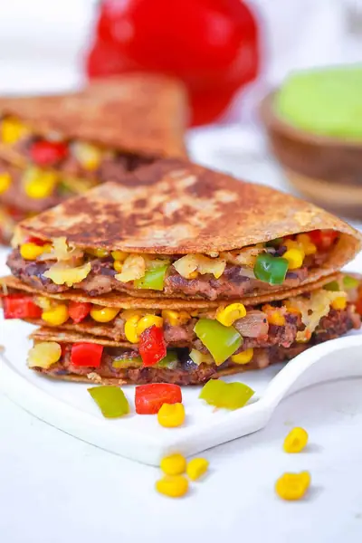

Black Bean Quesadillas with Pepper Jack Cheese

Ingredients
- 1 tsp olive oil (and olive oil cooking spray)
- 1 red onion (diced)
- 1 poblano pepper (diced)
- 1 red bell pepper (diced)
- 1 cup frozen corn kernels
- 1 jalapeño (seeded and diced)
- 3 cloves garlic (minced)
- 4 oz pepper jack cheese (shredded)
- 1 15oz can refried black beans
- 2 tsp Taco seasoning (more or less to taste)
- 1 tsp ground cumin
- 1 tsp chili powder
- salt to taste
- 4 whole wheat flour tortillas (120-150 calories per tortilla with at least 4g fiber)
Steps
- Heat a pot or a large pan over medium heat. Add the oil, onion, bell pepper, poblano pepper, corn, jalapeño and garlic. Saute until cooked through – about 5 minutes.
- Heat the refried beans in a small pot, add taco seasoning to flavor the beans (to taste)
- Once the veggies have cooked, add the cumin, chili powder and salt to taste.
- Meanwhile, grate the pepper jack cheese and set aside.
- Assemble your quesadilla and get ready to cook it! First, take your tortilla and slather half of it with the refried black bean mixture (about 1/4 cup per tortilla). Top it with the veggies (1/4 the veggie mixture). And then top it with the cheese (1 oz per quesadilla).
- Fold the quesadilla in half. Spray a large pan with the olive oil cooking spray, and let the quesadilla cook until it’s brown and crispy. Flip it to cook the other side and continue cooking until the cheese has melted and both sides are crisp.
- Cut into slices, serve with salsa, guacamole or 2% Greek Yogurt.
Recipe by Anjali Shah · The Picky Eater, from The Picky Eater. Saved here for personal use; the original has the full notes, tips and photos. Open original